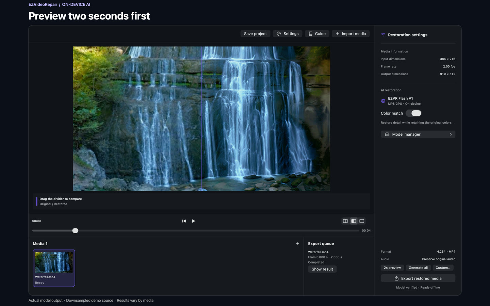
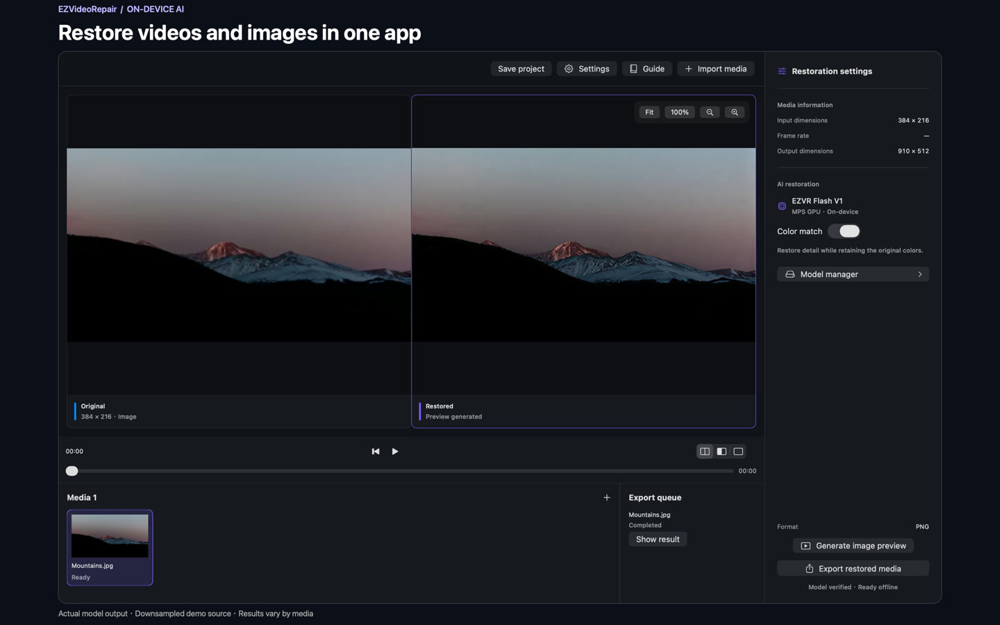

Comprueba antes de procesar
Genera una vista previa de un fragmento de dos segundos desde el punto que elijas. Comprueba el resultado antes de procesar todo el vídeo.
Elige dos segundos de vídeo para ver cómo quedan los detalles antes de restaurar un fragmento más largo. También puedes restaurar fotos en tu Mac.
Para Mac con Apple Silicon y macOS 14 o posterior. Abre el DMG y arrastra EZVideoRepair a Aplicaciones.

Compara los mismos dos segundos antes y después de la restauración. El vídeo original mide 384 × 216 píxeles y se reproduce a 2 fotogramas por segundo.
Abre una captura para verla a tamaño completo. Los ejemplos usan material de resolución reducida. Las capturas muestran la interfaz en inglés. La aplicación está disponible en chino simplificado e inglés.





Los vídeos y las fotos se procesan en tu Mac. Tras la configuración inicial, puedes trabajar sin conexión.
Menos distracciones. Más claridad.
Importa, comprueba la vista previa y exporta el resultado con un proceso sencillo, sin complicar tu espacio de trabajo.
Genera una vista previa de un fragmento de dos segundos desde el punto que elijas. Comprueba el resultado antes de procesar todo el vídeo.
Restaura el vídeo completo o indica una duración. Procesa solo el fragmento que necesites.
Prueba un fragmento de un vídeo horizontal o vertical, o abre una foto para ver los detalles de la imagen restaurada.
Al volver a abrir un proyecto guardado, encontrarás tus ajustes y los resultados que ya has obtenido.
Si los archivos y los ajustes coinciden, se reutilizan los resultados ya completados para evitar procesarlos de nuevo.
Los archivos de configuración se descargan en segundo plano. Puedes consultar el progreso, pausar la descarga y reanudarla más tarde.
De tus archivos al resultado
Abre el DMG y arrastra EZVideoRepair a Aplicaciones. Inicia la aplicación y sigue los pasos de configuración.
Importa tus archivos, elige un punto de inicio y comprueba la vista previa de un fragmento de dos segundos.
Elige el vídeo completo o una duración concreta, exporta el resultado o guarda el proyecto para continuar más tarde.
No. Los vídeos y las fotos se procesan en tu Mac. La configuración inicial puede necesitar conexión a internet para descargar archivos.
Actualmente, la restauración solo es compatible con Mac con Apple Silicon. No es compatible con Mac con Intel ni con Windows.
Depende de tu Mac, del material y de su duración. El procesamiento puede tardar bastante más que la reproducción del vídeo. Prueba un fragmento de dos segundos antes de decidir cuánto vas a procesar.
Sí. El proyecto guarda los ajustes y los resultados, y hace referencia a los archivos originales. Copia tanto el proyecto como los originales al nuevo Mac.
Descargar para Mac (DMG) Abre el DMG y arrastra EZVideoRepair a Aplicaciones.
Una herramienta para Mac centrada en mejorar tus imágenes. Empieza con una vista previa breve.
Descargar para Mac (DMG)